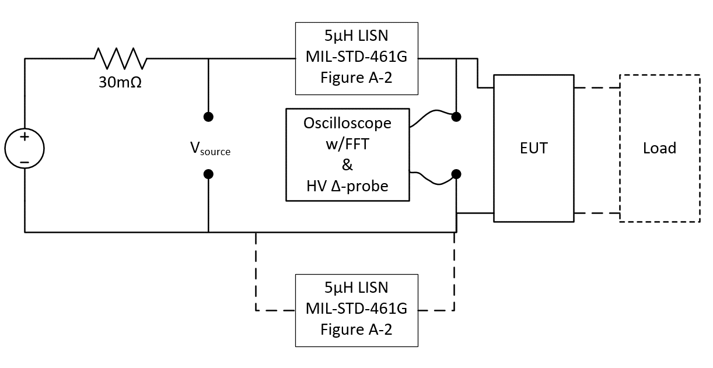
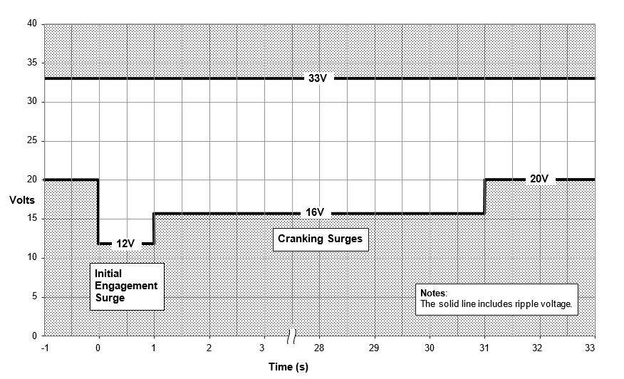
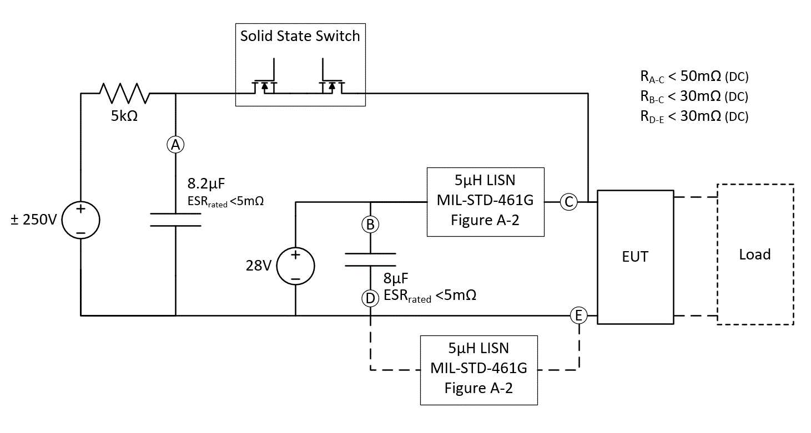
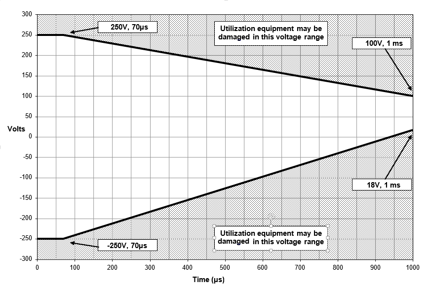
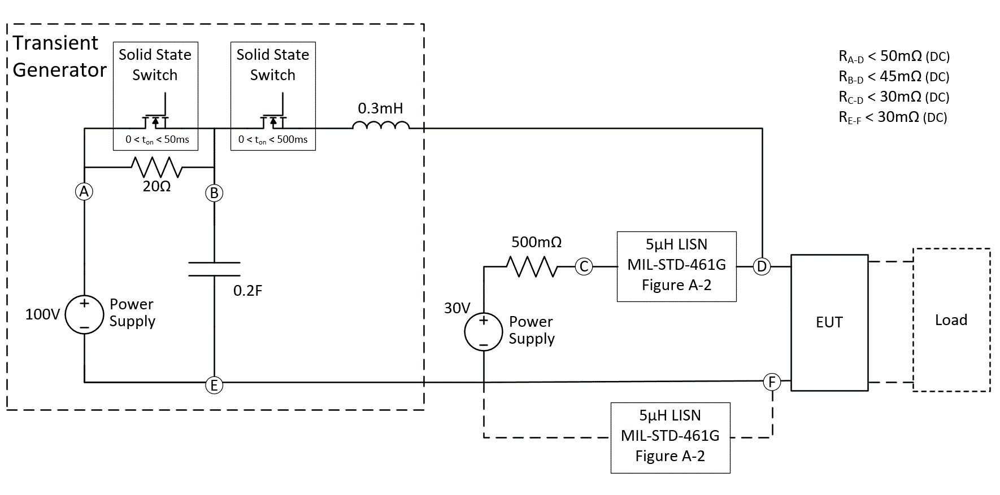
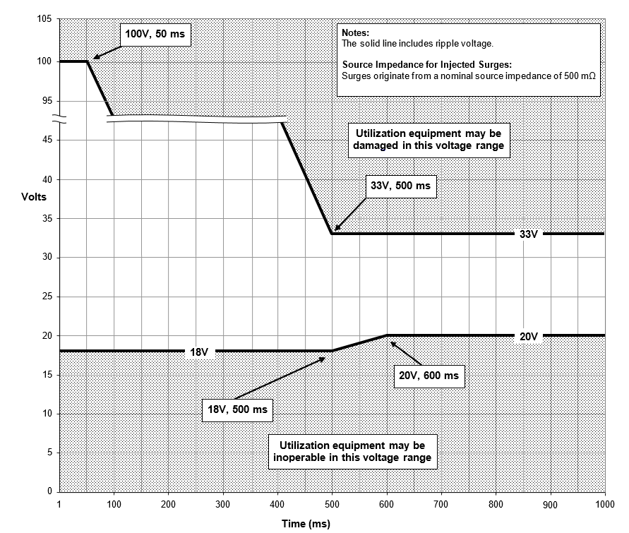

穩態電壓與漣波Steady-state voltage and ripple
設備要在 20–33 V（含漣波）之間正常運作，還要承受疊加在直流上的 ±2 V（4 Vpp）、30 Hz–5 kHz 漣波。注入測試依 MIL-STD-461 CS101 方法，在 22 V 與 31 V 兩個點做。 Equipment must work from 20 V to 33 V including ripple, and tolerate ±2 V (4 Vpp) ripple from 30 Hz to 5 kHz. Injection follows the MIL-STD-461 CS101 method at 22 V and 31 V.
- 最高Max
- 最低Min
規範怎麼說What the standard requires
- 上限 33 VDC 含漣波；下限依 Figure 8，即 20 V（5.1.1.1）。Upper limit 33 VDC including ripple; lower limit per Figure 8 (20 V).
- 注入漣波 ±2 V、30 Hz–5 kHz，超出此頻段不算漣波（5.1.1.2.1）。Injected ripple ±2 V, 30 Hz–5 kHz.
- 發出漣波須小於 ±1 V（2 Vpp）、30 Hz–1 kHz；最小與最大負載各操作至少 10 秒，用示波器 FFT 量測（5.1.1.2.2、5.3.1.2.2）。Emitted ripple below 2 Vpp, 30 Hz–1 kHz; each load condition for at least 10 s, measured by scope FFT.
對本案的意義What it means for this design
- 22 V ± 2 V 剛好碰到 20 V 下限，31 V ± 2 V 剛好碰到 33 V 上限——兩個測試點就是把漣波推到範圍邊緣。AI 觀察22 V ± 2 V touches the 20 V floor and 31 V ± 2 V touches the 33 V ceiling: both test points push ripple to the edge.
- 升壓級在 20 V 低點時工作週期最大，30 Hz–5 kHz 的輸入擾動最容易穿透迴授環路，要確認控制迴路在低頻有足夠增益。AI 推論At the 20 V corner the boost stage runs at its highest duty cycle; check loop gain at 30 Hz–5 kHz.
原文測試電路：發出漣波量測Figure 9 — emitted ripple test circuit

啟動事件：初始嚙合與冷車Starting event: initial engagement and cranking
引擎啟動時，起動馬達嚙合瞬間電壓最低掉到 12 V（最長 1 秒），接著冷車期間維持在 16 V 以上、最長 30 秒。設備必須全程正常運作。用本案的負載功率、效率與 UVLO 設定，看每一段的電流和會不會斷電。 During engine start the bus can drop to 12 V for up to 1 s at starter engagement, then sit at 16 V or above for up to 30 s of cranking. Equipment must keep working throughout.
- 20 V 時電流at 20 V
- 12 V 嚙合電流at 12 V IES
- 16 V 冷車電流at 16 V crank
- 冷車路徑損耗Path loss
- 30 秒累積熱量Heat over 30 s
Table I 測試序列Table I test sequence
| 事件 Event | 電壓 Voltage | 持續 Duration |
|---|---|---|
| 1 | 20 V (-1/+0) | 1 s (-0/+0.1) |
| 2 · IES | 12 V (-1/+0) | 1 s (-0/+0.1) |
| 3 | 20 V | 1 s |
| 4 · IES | 12 V | 1 s |
| 5 | 20 V | 1 s |
| 6 · IES | 12 V | 1 s |
| 6 · 冷車 Crank | 16 V (-1/+0) | 30 s (-0.1/+0) |
注意電壓容差是 -1/+0：實際測試可能壓到 11 V 與 15 V。Tolerances are -1/+0, so the test may go as low as 11 V and 15 V.
對本案的意義What it means for this design
- 原設計以 10 V 算峰值電流 28.2 A，已涵蓋規範 12 V（含 -1 V 容差為 11 V）的嚙合突降。The original 10 V basis (28.2 A) already covers the 12 V IES, even with its -1 V tolerance.
- 真正決定散熱的是 16 V（容差下 15 V）持續 30 秒：這段電流接近穩態，熱有時間傳到外殼，要用穩態熱阻評估。AI 推論The 30 s crank at 16 V (15 V with tolerance) sets the thermal design: long enough to reach case temperature.
- UVLO 必須低於 11 V，還要留遲滯：若 UVLO 上升門檻高於 16 V，嚙合結束後回不去，設備會一直關著。AI 推論UVLO must sit below 11 V with hysteresis whose rising threshold stays under 16 V.
原文 Figure 6Starting disturbance limits

電壓尖峰：250 V、1 ms 以內Voltage spikes: 250 V, under 1 ms
尖峰來自線束與感性負載切換，是持續 1 ms 以內、能量有限的阻尼振盪。測試由 8.2 µF 電容充到 ±250 V，經固態開關打進 LISN 與設備，正負極性各至少 50 發、間隔 1 秒。 Spikes come from harness interaction and switching reactive loads: energy-limited, damped oscillations under 1 ms. The test dumps an 8.2 µF capacitor charged to ±250 V into the LISN and equipment, at least 50 shots per polarity, 1 s apart.
- LISN 5 µH × 8.2 µF 諧振Natural f
- 電容儲能 ½CV²Stored energy
- 規範單發上限Spec max
- 200 mJ
- 測試總發數Total shots
- ≥ 100
規範怎麼說What the standard requires
- Figure 7：正向包絡 250 V 維持 70 µs，1 ms 時降到 100 V；負向包絡 −250 V 維持 70 µs，1 ms 時回升到 +18 V。Positive envelope 250 V for 70 µs, down to 100 V at 1 ms; negative envelope −250 V for 70 µs, back up to +18 V at 1 ms.
- 注入尖峰上升時間 ≤ 50 ns，單發總能量 ≤ 200 mJ（5.1.3.1.1）。Rise time ≤ 50 ns, energy per spike ≤ 200 mJ.
- 在最差負載下測；最差負載不明時至少測最小與最大負載（5.3.3.1.1）。Test at worst-case load, or at least at minimum and maximum load.
- 設備自己發出的尖峰要依 ISO 7637-2 方法量，每個切換功能至少 32 次，單一事件 < 125 mJ（5.3.3.1.2）。Emitted spikes: ISO 7637-2 method, 32 operations per switching function, under 125 mJ per event.
對本案的意義What it means for this design
- 8.2 µF 充到 250 V 儲存約 256 mJ，比 200 mJ 上限多——實際送進設備的能量由 LISN 與設備阻抗分走一部分。AI 推算8.2 µF at 250 V stores about 256 mJ; the LISN and EUT impedance share what actually reaches the equipment.
- 5 µH 與 8.2 µF 的諧振約 25 kHz，落在規範 20–500 kHz 的低端；設備輸入電容越大，頻率越低、衰減越慢。AI 推算5 µH with 8.2 µF rings near 25 kHz, at the low end of the band; more input capacitance lowers it further.
- 前端 TVS 要能吸收 200 mJ 等級、重複 50 次的能量，箝位電壓還要低於突波抑制器 MOSFET 的 VDS 額定（100 V 元件很吃緊）。AI 推論The front-end TVS must absorb ~200 mJ fifty times and clamp below the pass FET's VDS rating.
原文測試電路：尖峰注入Figure 10 — spike injection circuit

原文 Figure 7Spike envelope

電壓突波：100 V、5 發連打Voltage surges: 100 V, five in a row
突波模擬交流發電機的負載突降（load dump）。突波抑制器把輸出箝在設定電壓，多出來的電壓全部落在 MOSFET 上變成熱。下面同時看兩件事：每一發的 MOSFET 功耗，以及 5 發、每 5 秒一發之後接面溫度會累積到多高。 Surges model an alternator load dump. The surge stopper clamps its output; the excess voltage drops across the pass MOSFETs as heat. Below: MOSFET dissipation per shot, and how junction temperature builds over five shots 5 s apart.
- MOSFET 峰值功耗Peak, total
- 每顆峰值Peak per FET
- 每發能量Energy per shot
- 5 發後最高 TjPeak Tj
Table II 參數Table II parameters
| 項目 Item | 值 Value |
|---|---|
| VNOM | 30 V (-0/+1) |
| VPEAK | 100 V (-0/+10) |
| 上升時間 Rise time | 1 ms < t < 10 ms |
| 固態開關 1 閉合 SSW1 closed | 50 ms (-0/+5) |
| 固態開關 2 閉合 SSW2 closed | 500 ms (-0/+5) |
| 源阻抗 Source impedance | 500 mΩ (-25/+0) |
| 發數／間隔 Pulses / spacing | 5 發，每 5 s |
500 mΩ 的位置Where the 500 mΩ sits
- Table II 與 Figure 8 註記寫「源阻抗 500 mΩ」，但 Figure 12 電路中這顆 500 mΩ 串在 30 V 正常電源那一路，不在突波路徑上。Table II and the Figure 8 note say 500 mΩ, but in Figure 12 that resistor sits in the 30 V supply branch, not the surge path.
- 前 50 ms 由 0.2 F 電容經兩個固態開關與 0.3 mH 直接打進設備，路徑電阻 RA-D < 50 mΩ，等於低阻抗源。所以本頁預設 50 mΩ，算出的功耗跟原設計的 463 W 一致。AI 依電路圖推論For the first 50 ms a 0.2 F capacitor drives the EUT through both switches and 0.3 mH, under 50 mΩ: effectively a stiff source, matching the original 463 W estimate.
- 50–500 ms 之間，固態開關 1 斷開、改經 20 Ω 送出，與 30 V／500 mΩ 並聯後約 31.7 V、0.49 Ω，低於箝制電壓，MOSFET 不再發熱。AI 推算From 50 to 500 ms the generator feeds through 20 Ω; with the 30 V / 500 mΩ branch the Thevenin source is about 31.7 V / 0.49 Ω, below the clamp.
- 切到「Figure 8 包絡上限」會看到另一個數量級：若車上電源真的照包絡從 100 V 線性降到 33 V，箝制時間拉長到約 480 ms，每發能量約 120 J，是測試電路的 5 倍。規範要求設備在包絡內都不能損壞。AI 推算If the vehicle bus actually followed the envelope from 100 V down to 33 V, clamping lasts ~480 ms and each shot dumps ~120 J, five times the test-circuit value. The requirement covers the whole envelope.
熱模型的限制Limits of the thermal model
- 這裡用兩階 RC 估算接面溫度：快的一階（接面→外殼）決定每發的溫度尖峰，慢的一階（外殼→散熱片→環境）決定 5 發之間會不會累積。假設並聯 MOSFET 完美均流。簡化估算Two-stage RC: the fast stage sets each shot's spike, the slow stage sets build-up across five shots. Perfect current sharing assumed.
- MOSFET 在線性區會有熱不穩定（Spirito 效應），實際能承受多少要看 datasheet 的 SOA 圖與 Zth(t) 曲線，不能只看溫度。Linear-mode operation is limited by thermal instability; check the datasheet SOA chart and Zth(t), not temperature alone.
- 預設值（0.3 K/W、15 ms；1.5 K/W、20 s）只是起點，請換成實際元件 datasheet 的 Zth 與散熱設計的數值。Defaults are starting points; replace them with datasheet Zth and real heatsink data.
對本案的意義What it means for this design
- 測試電路下每發約 22 J，原設計 2 顆並聯＋故障計時的方向可行；溫度主要由單發尖峰決定，散熱片每發只累積幾度。AI 推算About 22 J per shot under the test circuit; the two-FET plan holds. Each shot's spike dominates; the heatsink adds only a few degrees per shot.
- 包絡上限的每發能量約 120 J，但接面溫度只多約 10 °C——真正的風險不在溫度，而在 MOSFET 要在線性區撐約 480 ms，大多數 datasheet 的 SOA 圖在 100 ms 以上已經很窄。要涵蓋包絡，適合改用開關式前端保護或 COTS 前端模組。AI 推算＋推論At the envelope limit each shot carries ~120 J yet junction temperature rises only ~10 °C more. The real risk is ~480 ms of linear-mode operation, where most SOA charts are very narrow; a switch-mode front end or a COTS module fits better.
原文測試電路：突波注入Figure 12 — surge injection circuit

原文 Figure 8Operating voltage and surge limits

反接保護與測試架構Reverse polarity and test setup
正負極反接、電源加到 33 VDC、維持 5 分鐘。判定不是「有沒有燒」，而是反接電流不能超過正常工作電流，接回正確極性後還要正常運作。選一種保護方式看結果。 Swap the leads, apply 33 VDC for 5 minutes. The pass criterion is not just "no damage": reverse current must not exceed normal operating current, and the unit must work again once reconnected.
- 正常工作電流（28 V）Normal I
- 反接電流（33 V）Reverse I
- 正常運作損耗Loss at 28 V
- 冷車 16 V 損耗Loss at 16 V
測試步驟（5.3.4）Procedure
- 備好電流量測與保護，把設備正端接電源負端、負端接電源正端。With current measurement and protection in place, connect the EUT's + to supply − and − to supply +.
- 電源設 33 VDC，維持 5 分鐘；反接電流超過正常工作電流即判失敗。Set 33 VDC for 5 minutes; reverse current above normal operating current is a failure.
- 接回正確極性，確認功能正常；任何偏離正常運作都算失敗。Reconnect correctly and verify normal operation.
LISN 怎麼接How many LISNs
所有測試的共通條件（5.2）Common test conditions
| 項目 Item | 規定 Requirement |
|---|---|
| 環境 Environment | +23 °C ± 5 °C，相對濕度 0–90%，氣壓 80–102 kPa |
| 電壓容差 Tolerances | 標稱電壓 ±1%；量測容差預設 ±5%；電源輸出維持 ±1% |
| 量測點 Reference point | 設備電源輸入端；多組輸入端全部同時監測 · All inputs monitored simultaneously |
| 波形驗證 Waveform check | 注入波形先在開路（不接設備與負載）驗證 · Verified open circuit first |
| 負載 Loads | 非獨立設備要接代表實車的負載 · Vehicle-representative loads |
| 前置條件 Prerequisite | EMI 與 ESD 須在 1275 測試前先通過（5.3.5、5.3.6） |
| 判定 Pass / fail | 任何偏離正常運作即為失敗 · Any deviation from normal operation is a failure |